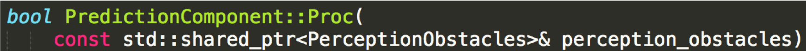
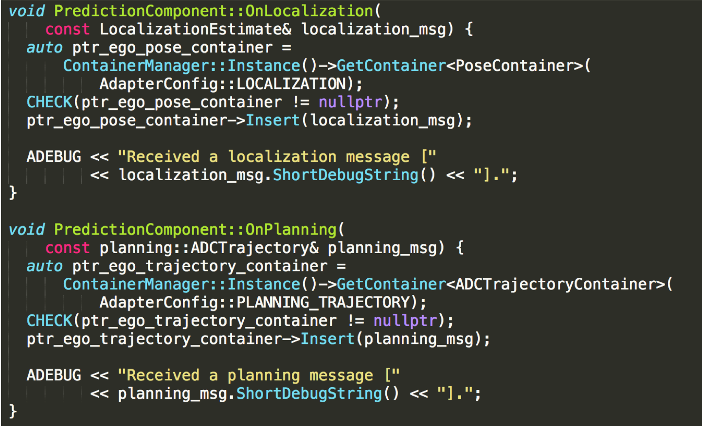

Prediction¶
Introduction¶
The Prediction module studies and predicts the behavior of all the obstacles detected by the perception module. Prediction receives obstacle data along with basic perception information including positions, headings, velocities, accelerations, and then generates predicted trajectories with probabilities for those obstacles.
In Apollo 5.5, the Prediction module introduces a new model - Caution Obstacle. Together with aggressively emphasizing on caution when proceeding to a junction, this model will now scan all obstacles that have entered the junction as long as computing resources permit. The Semantic LSTM Evaluator and the Extrapolation Predictor have also been introduced in Apolo 5.5 to support the Caution Obstacle model.
Note:
The Prediction module only predicts the behavior of obstacles and not the EGO car. The Planning module plans the trajectory of the EGO car.
Input¶
Obstacles information from the perception module
Localization information from the localization module
Planning trajectory of the previous computing cycle from the planning module
Output¶
Obstacles annotated with predicted trajectories and their priorities. Obstacle priority is now calculated as individual scenarios are prioritized differently. The priorities include: ignore, caution and normal (default)
Functionalities¶
Based on the figure below, the prediction module comprises 4 main functionalities: Container, Scenario, Evaluator and Predictor. Container, Evaluator and Predictor existed in Apollo 3.0. In Apollo 3.5, we introduced the Scenario functionality as we have moved towards a more scenario-based approach for Apollo’s autonomous driving capabilities.

Container¶
Container stores input data from subscribed channels. Current supported inputs are perception obstacles, vehicle localization and vehicle planning.
Scenario¶
The Scenario sub-module analyzes scenarios that includes the ego vehicle. Currently, we have two defined scenarios:
Cruise : this scenario includes Lane keeping and following
Junction : this scenario involves junctions. Junctions can either have traffic lights and/or STOP signs
Obstacles¶
Ignore: these obstacles will not affect the ego car’s trajectory and can be safely ignored (E.g. the obstacle is too far away)
Caution: these obstacles have a high possibility of interacting with the ego car
Normal: the obstacles that do not fall under ignore or caution are placed by default under normal
Evaluator¶
The Evaluator predicts path and speed separately for any given obstacle. An evaluator evaluates a path by outputting a probability for it (lane sequence) using the given model stored in prediction/data/.
The list of available evaluators include:
Cost evaluator: probability is calculated by a set of cost functions
MLP evaluator: probability is calculated using an MLP model
RNN evaluator: probability is calculated using an RNN model
Cruise MLP + CNN-1d evaluator: probability is calculated using a mix of MLP and CNN-1d models for the cruise scenario
Junction MLP evaluator: probability is calculated using an MLP model for junction scenario
Junction Map evaluator: probability is calculated using an semantic map-based CNN model for junction scenario. This evaluator was created for caution level obstacles
Social Interaction evaluator: this model is used for pedestrians, for short term trajectory prediction. It uses social LSTM. This evaluator was created for caution level obstacles
Semantic LSTM evaluator: this evaluator is used in the new Caution Obstacle model to generate short term trajectory points which are calculated using CNN and LSTM. Both vehicles and pedestrians are using this same model, but with different parameters
Vectornet LSTM evaluator: this evaluator is used in place of Semantic LSTM evaluator to generate short term trajectory points for “Caution” tagged obstacles. More detail is in vectornet lstm evaluator readme.
Jointly prediction planning evaluator: this evaluator is used in the new Interactive Obstacle(vehicle-type) model to generate short term trajectory points which are calculated using Vectornet and LSTM. By considering ADC’s trajectory info, the obstacle trajectory prediction can be more accurate under interaction scenario. Please refer jointly prediction planning evaluator.
Predictor¶
Predictor generates predicted trajectories for obstacles. Currently, the supported predictors include:
Empty: obstacles have no predicted trajectories
Single lane: Obstacles move along a single lane in highway navigation mode. Obstacles not on lane will be ignored.
Lane sequence: obstacle moves along the lanes
Move sequence: obstacle moves along the lanes by following its kinetic pattern
Free movement: obstacle moves freely
Regional movement: obstacle moves in a possible region
Junction: Obstacles move toward junction exits with high probabilities
Interaction predictor: compute the likelihood to create posterior prediction results after all evaluators have run. This predictor was created for caution level obstacles
Extrapolation predictor: extends the Semantic LSTM evaluator’s results to create an 8 sec trajectory.
Prediction Architecture¶
The prediction module estimates the future motion trajectories for all perceived obstacles. The output prediction message wraps the perception information. Prediction both subscribes to and is triggered by perception obstacle messages, as shown below:

The prediction module also takes messages from both localization and planning as input. The structure is shown below:
